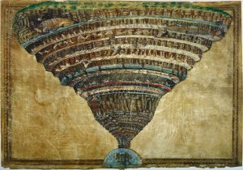

The following is the second installment of a two-part series. The first installment can be found here.
Zoroastrianism
Zoroastrianism is believed to be an outgrowth of an Indo-Iranian religious tradition that dates to the 2nd millennium BCE. However, we do not see it mentioned in Greek writings until about the middle of the 5th century BCE, with Heroditus’ “Histories.”
The main features of Zoroastrianism, or Mazdaism, is the worship of Ahura Mazda, the chief god who represents goodness. Ahura Mazda is opposed to Angra Mainyu, the evil principle, also associated with death and the underworld. Zoroastrians honor Ahura Madza by participating in good thoughts, words, and deeds, and avoiding chaos. It is believed that Ahura Mazda will eventually eliminate Angra Mainyu, and there will be a resurrection of all souls, who will return to Ahura Mazda.
Zoroastrian beliefs are regarded as dualistic rather than monotheistic because the two forces are equally opposed and at battle with one another. This idea is alien to Hellenistic culture previously; however, it is striking how the spread of Zoroastrian ideas influenced the Hellenistic world, and eventually Jewish and Christian thinking about the afterlife.
While Christianity in particular is not dualistic, the influence of the Prince of Darkness over the world, and the notion that Yahweh and his son, Jesus, will eventually conquer him and set everyone free at a final judgment is strikingly similar to the Zoroastrian idea. It was, without a doubt, an idea in circulation even in Judaism by the time of Jesus Christ.
In 586 BCE, the Babylonian exile of the Israelites began. Babylon was eventually conquered by Cyrus the Great, who allowed the Jews to return to Jerusalem, and to restore the Temple, albeit in an inferior version. However, during the Jews’ time in Babylon, the official religion was Zoroastrianism, and the development of their own beliefs about bodily resurrection after death was likely influenced by the Zoroastrians, as this was a part of their doctrine.
The writings of Ezekiel reflect this belief, especially his vision of “a vast plain covered with human bones bleached by the sun,” which resembles a Zoroastrian burial ground. Ezekiel focused on the restoration of Israel rather than resurrection of the body, but this likely represents the first time the idea came into Israelite thinking.[1]
Mystery Cults
The oldest known mystery cults in Ancient Greece were the Cult of Eleusis, the Cult of Dionysus, and the Cult of Orpheus, also known as Orphism. The cults may have been older than the 6th century BCE, but this is the first time they are documented.
The first two cults were agrarian in nature, but all three were bound up in ideas of the afterlife. This is not surprising, as the cycles of birth, death, and rebirth are often seen as related to agriculture cycles of planting and harvesting. Epitaphs on graves and golden tablets found in Greece with Orphic writings provide instructions for the dead on passing through the underworld. There was a belief that the underworld was divided into two, sometimes three parts. Pindar describes a
tripartite Underworld with different locales for the bad, the good, and the good who arrive with an extra characteristic that sets them apart from the rest: either they have managed to be good even longer than the other good souls, or, like most heroes, have a special relationship with the gods.[2]
More will be said about the mystery cults in Part Two. What is significant about them is the notion that initiates had control of their fate after death, and that their ritual actions could affect their ultimate, individual destiny.
From Hades to Olympus
Jake Stratton-Kent talks about the movement of chthonic deities from the world under the earth to the sky. He credits this movement to Heraclitus of Pontus, born in the 4th century BCE. He refers to Heraclitus’s character, Empedotimus:
This hero’s exploits included a vision of just such a celestial Underworld, including a variant on its geography better known in another form. Plato’s openings to the realms above and below were developed by this writer and others into veritable gates with definite celestial locations. Empedotimus beheld these gates, and from the surviving fragments we know where Heraclitus situated them. The most important gate in many respects was the Gate of Heracles, which led to the realm of the gods.[3]
These gates corresponded to points in the zodiacal sky. Astrology was not a Greek invention, but likely introduced by the Persians.
Some variants of the myth actually placed Hades in the sky, but the most notable movement was of Dionysus and Persephone to a place among the second generation of the Twelve Olympians. Dionysus was not an underworld deity proper, but his descent into the underworld to rescue his mother Semele and bring her up to Mount Olympus gives him the association.
Traditionally, Dionysus was the son of Zeus and Semele. While he was the god of wine, and hence an agricultural/earth deity, his association with Zeus gave him a “foot in both worlds,” so to speak. Dionysus’ myth also had him roaming the earth, and he was associated with foreigners and foreign things. This will be important when considering the goetes, or magicians who dealt with the dead in the next section.
Persephone’s mother was also an earth deity with an Olympian association, Demeter. But, in the Orphic variations of the myths, Dionysus was the son of Zeus and Persephone, and was supposed to succeed Zeus on Mount Olympus, but was torn apart and eaten by the Titans. This led to the punishment of the Titans and, also, of humanity, who were guilty by association. Persephone went down to the underworld, where she mourned for Dionysus.
In this version of the myth, humans paid tribute to Persephone every ten years for her loss as a form of appeasement. This introduces the idea that humanity has some kind of sin that must be paid for to a deity.
Returning to the movement of the underworld, Stratton-Kent writes,
The celestial Hades, with variations, became a very widespread theme in the evolution of beliefs. A creative ferment had taken hold of the initiates of Mystery schools, members of Gnostic sects, on magicians and philosophers. A major theme of these events was focus on knowledge of the names of astrological guardians, of routes through the celestial underworld, of seals or characters associated with them; these were secrets that assured the initiate a privileged existence after death, and bestowed power on the magician.[4]
Franz Cumont also discusses the shift in belief with the movement of the underworld:
The doctrine that the Inferi were in the atmosphere was adopted by Stoicism from the time of Posidonius, and was therefore widely believed from the end of the Roman Republic onwards. Even the mysteries, which first kept alive the belief in a subterranean kingdom of the infernal gods, did not escape the influence of these new ideas and brought to adapt their esoteric teaching to them.[5]
He goes on to say:
However, the symbolical interpretations of the pagan theologians who respected tradition and the purely negative criticism of the skeptics led finally to a common result, to the destruction, namely, of the ancient beliefs, even when it was claimed they were being saved. Whether the souls were held captive in the other hemisphere, or whether they were condemned to reincarnation in a body, Hades was transformed either to the lower sky, air or the earth, and the early conception of the subterranean world, whither the dead who had been laid in the grave descended, was abolished.[6]
Egyptian Culture
As it was noted earlier, Egypt had a much more developed idea about the afterlife centuries before these ideas penetrated Greece and Rome. There was certainly a greater involvement with Egypt and Egyptian culture by the Hellenistic world around this time, just before the Roman conquest of Egypt. Cults of Isis and Osiris, two deities intimately bound up with Egyptian underworld myths, became prevalent in Greece, and often the two were interchanged for Demeter or Persephone and Dionysus.
Monotheism
The Hebrews were originally a henotheistic people. They worshipped many of the Canaanite deities, but also worshipped Yahweh in Abrahamic times. By about the year 1000 BCE, Yahweh had become their only deity, though many Jews slipped back into habitual pagan practices. At that time, Yahweh was only the god of the Israelites, and was thought to have no control over Sheol, the Hebraic underworld.
However, by the 5th century BCE, Yahweh was thought to be a more universal deity, an idea that carried over into the time of Jesus Christ at the beginning of the common era. As Yahweh’s influence as the “only god” increased, so did his influence, and hence Yahweh not only controlled the living and the dead, but judged them as well. Ideas about Satan were initially much different, as Satan simply fulfilled an angelic role as one who stood in the way of humans opposed to god’s will, or in Job’s case, to test faith. It is likely that Zoroastrian ideas about Ahura Mazda and Angra Mainyu had some influence in later understandings of the role of Satan.
The Babylonian Captivity
Many Jews during the Babylonian captivity period of their history interpreted their captivity as a sign that they were not keeping Yahweh’s covenant. Around this time, which is about the 6th century BCE, many prophetic writings appeared, which were either included in the Bible, the Apocrypha, or, later, in rabbinical literature that had an eschatological bent. The assumption was that God would save Israel—initially from their captors—but later, the idea formed that they would be saved in the afterlife as well, pulled from the pit of Sheol.
Raphael notes three stages of evolution of afterlife beliefs among the Israelites. The first came with the strengthening of Yahweh’s power.
Once YHVH came to be regarded as the one and only God of the universe, God’s power widened and could now save human beings from the clutches of Sheol. Thus Psalm 49:15 states, ‘But God will redeem my soul from the power of Sheol, and will receive me.’[7]
By the time of Jeremiah, the notion of individual retribution, and hence individual responsibility, enters Jewish thought.[8] Finally, the idea of individual immortality is touched upon in Jeremiah, Ezekiel, and Job.[9] The development of these ideas was not linear, and the notion of a collective salvation for Israel still persisted even with notions of the individual. But the development of these ideas paved the way for modern monotheistic notions of the immortal soul.
While I would be cautious about drawing too many conclusions from the contemporary nature of many of these events, the increase of trade and various conquests in the Near and Middle East undoubtedly spread ideas that brought about these changes in thought over time. I might also add the rise in influence of philosophy, especially in Greece, where ideas about life after death were thought about along with other big questions.
While many philosophers scorned the idea of Hades as superstitious, they did have ideas about the survival of a “soul” after death that were not part of the original idea of the “psyche” or “nefesh met” of a person. Plato theorized that the soul was made of air and fire, and that the more humans clung to base, “material” ways, the more their soul would be weighted down with earth, and therefore not able to rise to the moon or any other planets or heavenly bodies, where he theorized the Isles of the Blessed actually existed
III. Part Two
When considering the underworld from the Jungian point of view, one must consider the influence of the collective unconscious. Jung identified three levels of consciousness—conscious awareness, which is our normal day-to-day thinking and decision-making state; the personal unconscious, made up of experiences, memories, traumas, and complexes gained throughout our life; and the collective unconscious, which is the unconscious memory and experience we share with all other human beings back to the beginning of the species.
The language of the unconscious consists of images, symbols, and metaphors. It is the language we associate with our dreams, but also the language of myth and religion. Jung suggested that there were fundamental ideas in the collective unconscious known as archetypes. His model suggests that the archetypes are in pairs of opposites, as the total psyche is a balancing act of forces, some with positive effects, some with negative effects.
The underworld itself is a symbol of the collective unconscious in Jungian thought. The qualities are similar—it is “dark” because it is not in the light of consciousness, and its contents are largely unknown, giving it a numinous quality that generates both curiosity and fear. It also has a quality of “foreign-ness” or “otherness,” because our conscious egos cannot relate to it.
All of these qualities are also part of Western theological speculation about the idea of Hell, which is the realm of the demonic, and consequently, these qualities are also associated with evil, even though none of these qualities is truly “evil” in and of itself. As Jung pointed out, “The demon is one of the lowest and most ancient stages in the conception of God.”[10]
The underworld is described as the “chthonic” realm because it is under the earth. Its association with agrarian deities and mythical figures has also impacted ideas about sexuality and fertility, giving rise to images of whoredom, drunken revelry, orgies, and uncontrolled lust. These things were not coincidentally associated with the rites of mystery cults. However, sexuality, a perfectly natural part of life, ends up with a negative connotation, as it represents something close to the “chthonic,” and governed by “irrational” and therefore chaotic influences.
The most common archetype associated with these negative afterlife associations is the “shadow”; Jung suggests that the image of the Devil, now associated with the underworld, is a variant of the “shadow.”[11] The “shadow” as an archetype represents all that is weak and repressed in our nature. This may call to mind the rephaim of the Israelites, the weakened souls of the dead in Sheol. Even though they are weak, they still have the power to do harm. However, though the “shadow” may represent the weaker and more disturbing side of our psyche, it is still part of our psyche.
This brings us back to the problem of the underworld shift. Moving the underworld to the celestial realm, bringing the underworld gods to Olympus, and demonizing others eventually resulted in the split between good and evil, in an ultimate sense. In the 1st century CE, St. John wrote the Book of Revelation, and outlined the battle between the forces of Satan and the forces of the Lord. This battle, which hearkens back to the Zoroastrians, results in the split of consciousness, the sense that we must eliminate “evil” from ourselves and only “good” can remain.
Jung speaks about primordial man or woman, whose whole life consisted of what is now unconscious content. If we consider that beliefs about the afterlife made no distinctions about morality or salvation, one could, without difficulty, see the metaphorical parallel between a common fate of “nothingness” and the mindset of primordial man or woman, who is fully immersed in the archetypes as a matter of daily life.
As our conception of this metaphorical space changed over time, so its impact on our collective psyche changed also. We currently have a situation where the ideal is to pursue good over evil, to the point of denying that we have evil in our nature. In some cases, Satan is responsible for evil, and Satan is externalized and separate, at war with God for control of the soul.
In the individual, the person consciously believes that they are “good” and only “doing good,” and negatives are only seen through projection onto others, and are attributed to others. In the individual, repression of our “shadow” side can lead to “a one-sided development if not to stagnation, and eventually to neurotic dissociation.”[12]
Consider Jung’s discussion of the rituals of Dionysus and their later equivalents, abolished by the Church:
The medieval carnivals and jeux de paume in the Church were abolished relatively early; consequently, the carnival became secularized, and with it divine intoxication vanished from the sacred precincts. Mourning, earnestness, severity, and well-tempered spiritual joy remained. But intoxication, that most direct and dangerous form of possession, turned away from the gods and enveloped the human world with its exuberance and pathos. The pagan religions met this danger by giving drunken ecstasy a place within their cult…Our solution, however, has served to throw the gates of hell wide open.[13]
While speaking of the devil may seem excessive, it should be noted that the same process by which we project our “shadow” onto individuals can also happen in large groups. The result is what Erik Erikson terms “pseudospeciation,” the false creation of categories of greater and lesser human beings.
When such a hierarchy is created, one of these supposedly “inferior” groups always loses—they may suffer economically, they may have curtailed rights, they may be ignored and forgotten by supposedly “superior” groups. The process of demonization leads to justification for wars, and in extreme cases, genocide. One only has to look at the Nazi profiling of the Jews—even going as far as to suggest that some of their darker physical features were part of their inferior attributes.
The question then becomes: how does one deal with the “shadow?” Espousing reason over mythical belief does not eliminate the “shadow”—according to Jung, “rationalism and superstition are complementary. It is a psychological rule that the brighter the light, the blacker the shadow; in other words, the more rationalistic our conscious minds, the more alive becomes the spectral world of the unconscious.”[14]
Reason and rationality become another means of repressing “shadow” content. In a recent essay for Psychology Today on “possession syndrome,” or what is otherwise known as “demonic possession,” forensic psychologist Stephen Diamond writes,
For some bedeviled individuals, the traditional ritual of exorcism or myth of ‘demonic possession’ serve to make more sense of their suffering than the scientific, secular, biochemical explanations and cognitive-behavioral theories proffered these days by mainstream psychiatry and psychology.[15]
There is still a need for these mythical and symbolic interpretations, as this is the language spoken by the unconscious.
One might wonder if completely embracing the “shadow” is the implied answer. In an article on the Jungian Shadow and occult practices, a writer who only goes by the name “Detoxorcist” addresses the issue of “Left-Hand Pathers,” or Satanists, and their notion that their total embracing of the destructive “shadow” actually frees their mind and reconciles the “self” to the “shadow.” He points out that this experience often does not work:
In some sense one is simply going from one extreme to another, trading places with the Destructive Shadow through the fetishization and glamorization of ‘darkness’, the ego-Self becoming as much of the Destructive Shadow as it can be while leaving its former self to the side, i.e., suppressing those softer emotions or need for love, that becomes the new shadow self that comes to torment the person in new ways…The whole purpose of understanding the shadow is to reduce it in size, to become more whole, not to increase its size or merely shift what it is, by denying who you are…In such a scenario one would simply be replacing one shadow with another.[16]
For Jung and the Jungian therapist, dealing with the “shadow” involves successfully integrating its contents into the conscious ego. This does not mean being swallowed up by the “shadow,” as total possession by an archetype is an overwhelming psychotic condition that destroys the ego. Schizophrenia is a condition characterized by no barriers between the conscious mind and the archetypes. As Jung notes:
Recognizing the Shadow is the reason for humility, for genuine fear of the abysmal depths of man. This caution is most expedient, since the man without a shadow thinks himself harmless precisely because he is ignorant of his Shadow. The man who recognizes his Shadow knows very well that he is not harmless…the advantage of the situation, despite all its dangers, is that once the naked truth has been revealed, the discussion can get down to essentials; Ego and Shadow are no longer divided, but are brought together in an—admittedly precarious—unity.[17]
IV. Conclusion
There appears to be a meaningful relationship between attitudes towards otherness and cultural conceptions of the afterlife. By looking back to archaic times in our civilization, and examining the beliefs about the dead and the underworld, it seems apparent that there was a shift in attitudes around the 6th century BCE that gradually lead to our modern “split” between reward and punishment, good and evil. This split is collective as well as individual, as it is ingrained in Western religious ideas, which influence the believer and the atheist alike.
It is not possible nor desirable to imply that this change in belief is somehow the “cause” of our current psychological state, but it is worth reflecting on this historical development, which may provide another clue to our endless struggle with the forces in our lives and the lives of others. We are left with the idea that the weaker “shadow” part of ourselves, our own internal “underworld,” is something evil, and to be avoided, repressed, or simply exorcised from our being.
Psychology even beyond Jung recognizes that repression leads to projection, and in the worst cases, we project our “shadow” sides onto entire cultures or groups, which can lead to oppression, prejudice, and even genocide. As human beings, it is important that we take responsibility for our own “shadow” sides, and learn compassion and empathy for others, as we all share the same kinds of human weaknesses and errors.
Brigid Burke (D.Litt.) is an adjunct professor of Mythology in the Classics and General Humanities department of Montclair State University (Montclair, New Jersey, United States). Her research and writing explores the link between death beliefs in Western culture and our collective psychology of good and evil, and masculine and feminine.
[1] John Casey, After Lives: A Guide to Heaven, Hell, and Purgatory, (Oxford: Oxford University Press, 2009), 256.
[2] Fritz Graf, Ritual Texts for the Afterlife: Orpheus and the Bacchic Gold Tablets, (London: Routledge, 2007), 100.
[3] Jake Stratton-Kent, Geosophia: The Argo of Magic. Vol. 1. 2 vols. (London: Scarlet Imprint, 2010), 174-175.
[4] Ibid., 175-176.
[5] Franz Cumont, After Life in Roman Paganism: Lectures Delivered at Yale University on the Silliman Foundation, (New Haven: Yale University Press, 1922), 82.
[6] Ibid., 83.
[7] Simcha Paull Raphael, Jewish Views of the Afterlife, 2nd ed., (Lanham: Rowman & Littlefield, 2009), 58.
[8] Ibid., 59.
[9] Ibid., 64.
[10] Carl G. Jung, Collected Works Trans. Hull, R.F.C. Bollingen, Series. 22 vols. (New York: Pantheon Books, 1953), ¶154.
[11] Ibid., ¶152.
[12] Ibid., ¶452.
[13] Ibid., ¶182.
[14] Carl G. Jung, “Foreword to Moser: ‘Spuk: Irrglaube Oder Wahrglaube?’” Trans. Hull, R.F.C. Psychology and the Occult, (Princeton: Princeton University Press, 1977), 144.
[15] Stephen Diamond, “The Devil Inside: Psychotherapy, Exorcism and Demonic Possession,” (2012. Psychology Today. February 20, 2012. http://www.psychologytoday.com/blog/evil-deeds/201201/the-devil-inside-psychotherapy-exorcism-and-demonic-possession), 3.
[16] Detoxorcist. “The Jungian Shadow,” Collection of blog posts on the Church of Satan and psychological and occult topics, (February 26, 2012. http://www.detoxorcist.com/jungian-shadow-and-the-occult.html), 2.
[17] Carl G. Jung, Collected Works Trans. Hull, R.F.C. Bollingen, Series. 22 vols. (New York: Pantheon Books, 1953), ¶452.